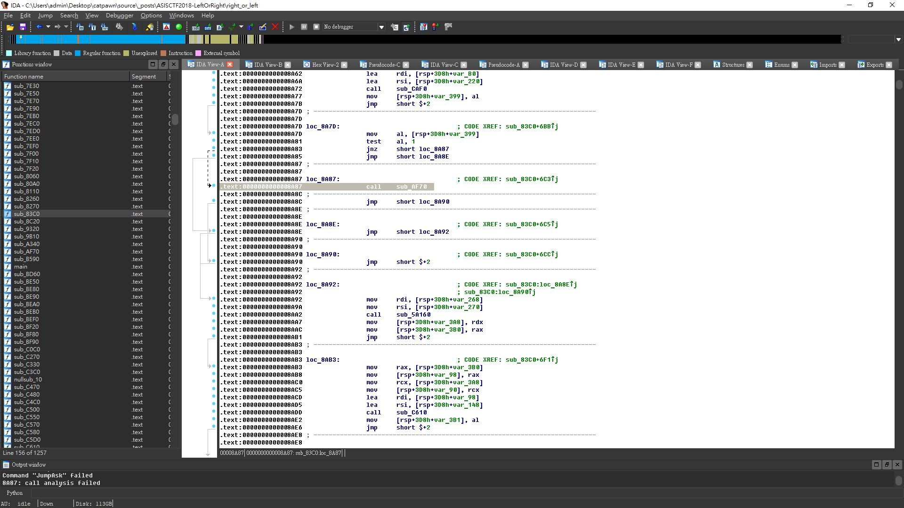

Question
Binary
Solution
見到咁大個binary都知唔方好野 , 是但扔入 ida 睇下咩環境先啦
Search strings 見到有D咁既野
見到 ASIS喎 , 睇下邊到call過先
見到What’s the Secret Key? 喎 , 仲唔係關鍵位 , 直接跟入去睇睇啦 , 睇番 xref path發現係 sub_8270 call出黎既
跟過去既時候點知 call analysis failed , decompile唔到無計
而家我地大概知個program點運作啦 , 首先sub_83c0應該係用黎判斷個user input , 之後判斷跳去(sub_9320 / sub_8c20 / sub_a340 / sub_af70 / sub_9b10)到print flag
之後睇番之前 strings window果張圖 , 咪有D疑似Input既野既 , 所以寫左條script 出黎撞
1 | from pwn import * |
之前撞到4條flag1
2
3
4
5superkey : ASIS{be_noughty_step_closer_to_see_the_flag}
mysecretkey : ASIS{imagine_a_flag_in_a_watermelon_how_can_you_capture_it}
givemetheflag : ASIS{you_should_try_harder_haha}
asisctfisfun : ASIS{this_is_fake_flag_haha}
therustlanguageisfun : ASIS{that_is_not_the_real_flag}
有一條撞唔到 , 咁試下暴力D 直接改call啦
睇下睇下發現 sub_83c0 有條判斷係check 如果係等於asisctfisfun就跳去 sub_af70
所以我地只要搵到 call sub_af70就可以慢慢試跳去邊個位

試左幾次之後發現改去 call sub_9320就會get到條flag
Flag
1 | ASIS{Rust_!s_Right_i5_rust_!5_rust_but_rust_!s_no7_left} |